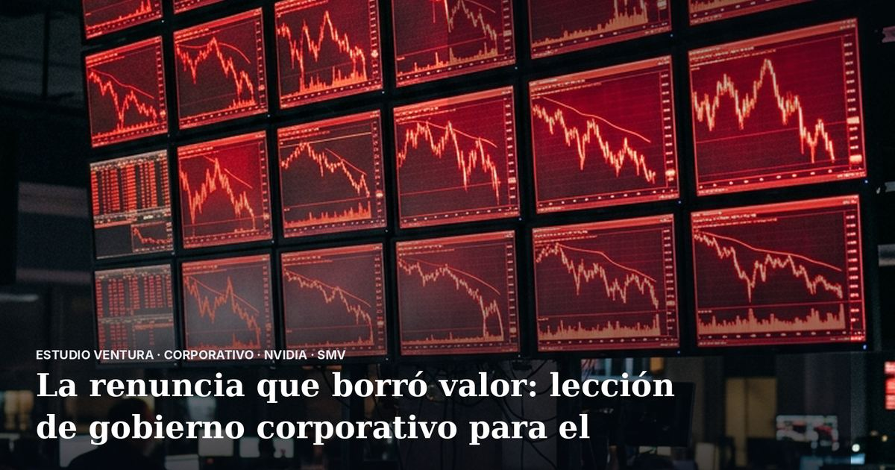

La renuncia que borró valor: lección de gobierno corporativo para el Perú

Jensen Huang renunció como CEO de Nvidia tras un escándalo por relaciones extramatrimoniales, según reporta Infobae. Más allá del chisme corporativo, el caso muestra que la conducta personal de un líder puede destruir valor en una empresa de la noche a la mañana.
Según Infobae, la acción de Nvidia cayó con fuerza durante la semana de la noticia y la compañía quedó con un CEO interino. Medios internacionales como el Financial Times y otros reportan además movimientos para definir un reemplazo y presión de legisladores de Estados Unidos por el caso. Las cifras exactas de la caída y los nombres de posibles reemplazos varían según el medio, así que conviene revisarlas en las fuentes originales.
En el Perú, la SMV publicó el 17 de octubre de 2026 el nuevo Código de Buen Gobierno Corporativo y de Sostenibilidad para las Sociedades Peruanas, que reemplaza la versión de 2013 e incluye pautas para empresas familiares. La idea de fondo es poner reglas claras entre familia, accionistas, directorio y gerencia. Revisa el texto oficial publicado en El Peruano.
Si manejas una empresa familiar o un directorio en el Perú, este es el momento de poner por escrito tus protocolos de gobierno corporativo: sucesión, conflictos de interés, conducta de directivos y manejo de crisis. Hazlo antes de que una crisis personal se convierta en una crisis legal y financiera para todos los accionistas. Una revisión legal del estatuto, el pacto de accionistas y el reglamento de directorio es un buen primer paso.
Fuentes: Infobae; medios internacionales citados; SMV (Código de Buen Gobierno Corporativo y de Sostenibilidad, El Peruano, 17-10-2026). Información referencial; no constituye asesoría legal ni de inversión.